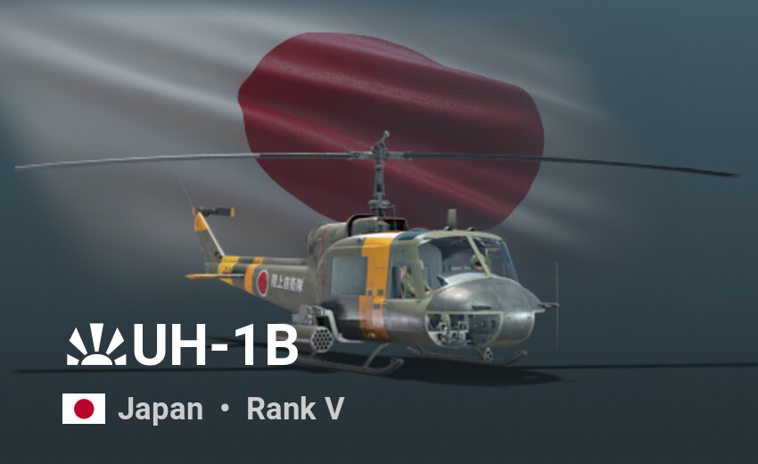
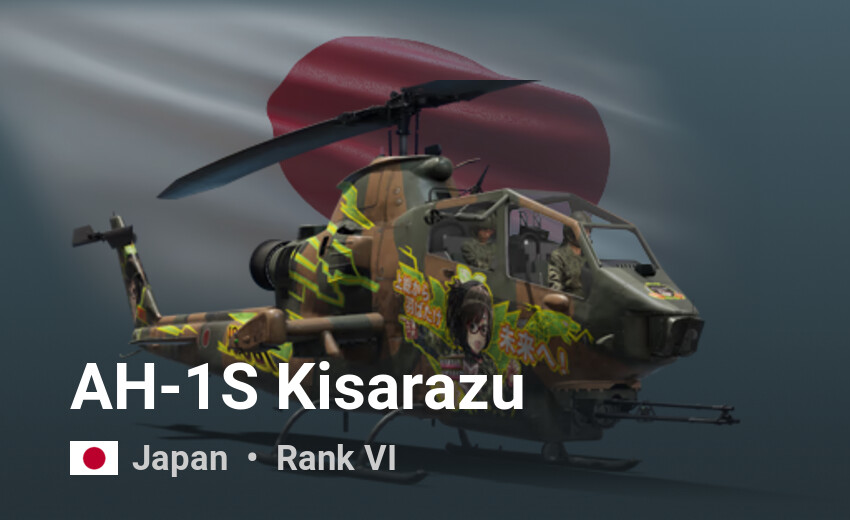
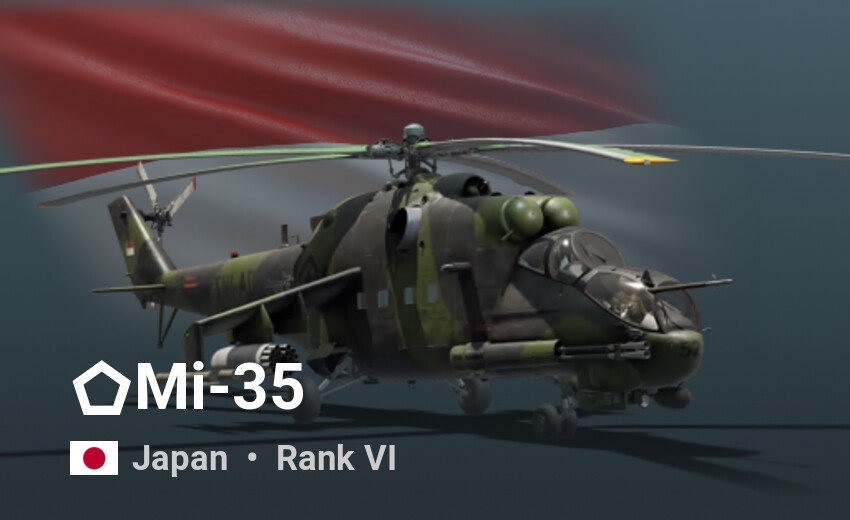
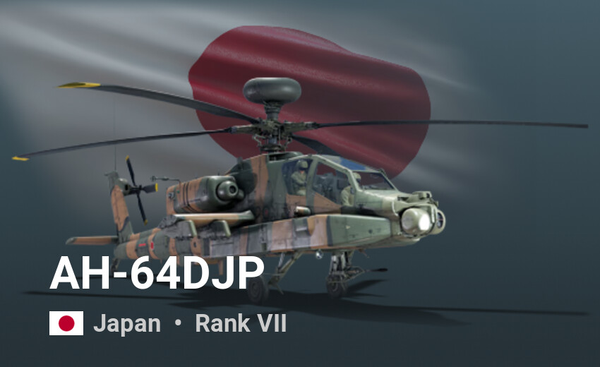

Losowe pojazdy yey

Był już w ameryce
Wersje wojskowe:
- XH-40 i YH-40 – prototypy.
- UH-1A – pierwszy model produkcyjny Bell 204, wyprodukowano 182 egzemplarzy.
- UH-1B – ulepszona wersja A, wyprodukowano 1014.
- UH-1C – wersji UH-1B brakowało mocy niezbędnej do przenoszenia broni i amunicji oraz nadążania z transportami, dlatego Bell zaprojektował kolejny wariant „Hueya”, UH-1C, przeznaczony wyłącznie do roli bojowej. Jest to UH-1B z ulepszonym silnikiem, zmodyfikowanymi łopatkami i głowicą wirnika dla lepszych osiągów w roli śmigłowca bojowego. Zbudowano 767 maszyn.
- UH-1D – początkowy model produkcyjny Bell 205 (wersja 204 z długim kadłubem). Zaprojektowany jako następca CH-34, który był wówczas w służbie armii amerykańskiej. Zbudowano 2008 sztuk, wiele później przekonwertowano do standardu UH-1H.
- UH-1E – wersja umożliwiająca start z okrętu desantowego,
- UH-1F – wersja transportowa dla USAF, wyposażona w silnik o mocy 1272 KM,
- UH-1H – wersja transportowa dla US Army, wyposażona w silnik o mocy 1400 KM.
- HH-1K – specjalny wariant SAR dla US Navy
- TH-1L – wersja szkolna oparta na modelu HH-1K
- UH-1M – modernizacja UH-1C z silnikiem Lycoming T53-L-13 o mocy 1400 KM (1000 kW).
- UH-1N Twin Huey – pierwszy model produkcyjny Bell 212, napędzany przez Pratt & Whitney Canada T400-CP-400.
- UH-1P – wariant UH-1F dla sił zbrojnych USAF do użytku w operacjach specjalnych, używane wyłącznie przez 20 Dywizjon Operacji Specjalnych USAF
- EH-1U – 2 egzemplarze UH-1H zmodyfikowane dla pod walkę elektroniczną Multiple Target Electronic Warfare System (MULTEWS).
- UH-1V – wersja ewakuacji medycznej dla US Army
- EH-1X – 10 egzemplarzy UH-1H przekształconych do walki elektronicznej w ramach programu „Quick Fix IIA”
- UH-1Y Venom – ulepszona wersja UH-1N dla US Marine Corps
Bell 204
- Agusta-Bell AB 204 – wojskowy śmigłowiec transportowy. Produkowany na licencji we Włoszech przez firmę Agusta.
- Agusta-Bell AB 204AS – wersja zwalczania okrętów podwodnych
- Fuji-Bell 204B-2 – wojskowy śmigłowiec transportowy. Zbudowany na licencji w Japonii przez Fuji Heavy Industries. Używany przez Japońskie Siły Samoobrony pod nazwą Hiyodori.
Bell 205
- Bell 205A-1 – wojskowy śmigłowiec transportowy, oparty na UH-1H.
- Bell 205A-1A – wersja 205A-1, ale z uzbrojeniem i inną awioniką. Wyprodukowano specjalnie dla Izraela.
- Agusta-Bell 205 – wojskowy śmigłowiec transportowy. Produkowany na licencji we Włoszech przez firmę Agusta.
- Dornier UH-1D – wojskowy śmigłowiec transportowy. Produkowany na licencji w Niemczech przez firmę Dornier.
- UH-1J – ulepszona japońska wersja UH-1H zbudowana na licencji w Japonii przez Fuji Heavy Industries otrzymała lokalnie oznaczenie UH-1J. Wyposażona w silnik turbowałowy Allison T53-L-703 o mocy 1343 kW (1800 KM), system redukcji drgań, środki zaradcze na podczerwień i kokpit kompatybilny z goglami noktowizyjnymi (NVG).

The AH-1S Kisarazu comes with a unique skin of the Kisarazu Sisters, which started from the original character draft created by a personnel of the 4th Anti-Tank Helicopter Unit of the Ground Self-Defense Forces Kisarazu Camp, located in Kisarazu, Chiba Prefecture in Japan. These special illustrations were brought to life by a professional illustrator Takashi Fujisawa, in order to commemorate the 20th anniversary of the 4th Anti-Tank Helicopter Unit.

Mi-35M – rosyjska głęboka modernizacja śmigłowców Mi-24W, opracowana na przełomie XX i XXI wieku. W odniesieniu do śmigłowców przeznaczonych dla armii rosyjskiej stosowane jest oznaczenie Mi-24WM.
Warianty
- Mi-35M1 (lub Mi-35M) – oznaczenie wariantu podstawowego modernizacji Mi-35M.
- Mi-35M2 – wariant Mi-35 przeznaczony dla wenezuelskiej armii. Oznaczenie wenezuelskie: Caribe.
- Mi-35M3 – oznaczenie wersji wyposażonej w nowsze systemy awioniki i uzbrojenia.
- Mi-35M4 – wariant Mi-35 przeznaczony dla Brazylijskich Sił Powietrznych. Ta wersja posiada izraelską awionikę, główne uzbrojenie stanowi działko GSz-23W umieszczone w ruchomym stanowisku pod dziobem śmigłowca oraz ppk Ataka i rakiety plot. Igła-W. Brazylijskie oznaczenie: AH-2 Sabre

Był już w ameryce, once again (ciekawe dlaczego hmmm, probably cuz Japonia miała rzeczy Amerykańskie po WWII)
Helikoptery Apache posiadają:
- Arabia Saudyjska – 12 AH-64A
- Egipt – 37 AH-64D
- Grecja – 12 AH-64A, 8 AH-64D
- Holandia Królewskie Holenderskie Siły Powietrzne – 28 AH-64D (30 zakupiono w 1995, 2 utracono, od 2020 modernizowane do AH-64E)
- Polska Siły Zbrojne Rzeczypospolitej Polskiej - 8 AH-64D (leasing od 2025 o wartości 300 milionów dolarów)[14], 96 AH-64E (zamówione 13 sierpnia 2024, dostawy w latach 2028-2032)
- Izrael Siły Powietrzne Izraela – 37 AH-64A, 11 AH-64D
- Japonia – 13 AH-64D
- Korea Południowa – 4 AH-64E, zamówiono 36
- Kuwejt – 50 AH-64D
- Republika Chińska – 5 AH-64E (1 utracono w 2014), zamówiono 30
- Stany Zjednoczone US Army – ok. 700 AH-64D/E
- Singapur Siły Powietrzne Republiki Singapuru – 20 AH-64D
- Wielka Brytania British Army – 50 Apache AH1 (AH-64D) z 67 wyprodukowanych
- Zjednoczone Emiraty Arabskie Siły Powietrzne Zjednoczonych Emiratów Arabskich – 30 AH-64D